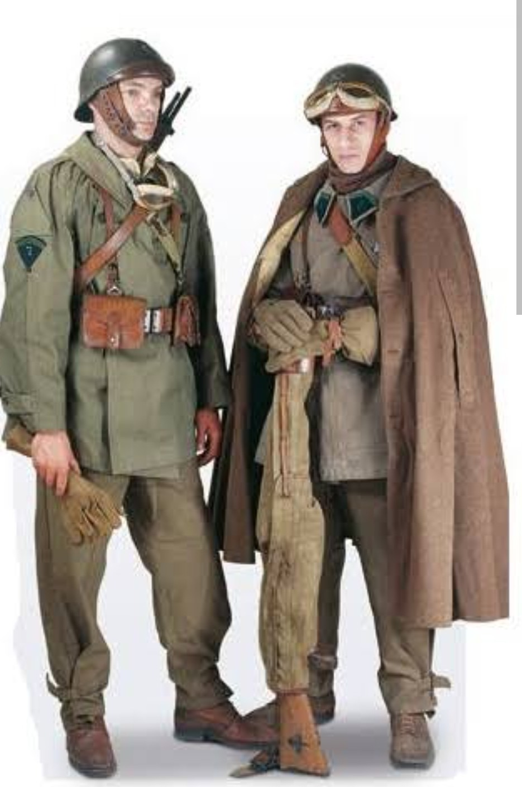

Les Dragons Portés sont les troupes motorisées de la cavalerie française. Intégrés aux Divisions Légères Mécaniques (DLM), ils accompagnent les chars SOMUA S35 et Hotchkiss H39, assurant la protection des flancs, la sécurisation des zones conquises et l’appui rapproché des unités blindées.
Leur rôle est essentiel dans les opérations rapides, où mobilité et coordination avec les blindés sont primordiales.
Les Dragons Portés disposent d’un armement similaire à l’infanterie motorisée, mais bénéficient de l’appui des blindés, ce qui renforce leur puissance de feu et leur capacité d’intervention.
Les Dragons Portés se déplacent en camions, motos, side‑cars ou véhicules semi‑chenillés. Leur mission est d’appuyer les chars, de tenir les positions capturées et d’intervenir rapidement sur les points sensibles du front.
Leur mobilité et leur coordination avec les blindés en font une unité indispensable dans les opérations de cavalerie mécanisée.